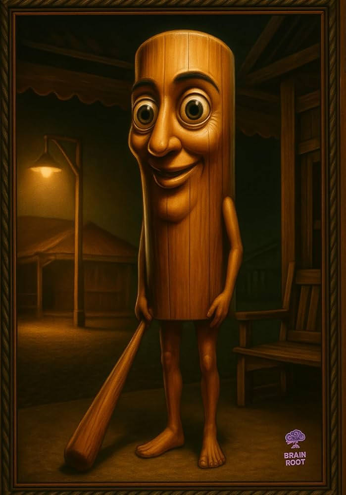

¿Para qué es ésta página?
En ésta página estaremos hablando de cada uno de los brainrots, trataremos de dar información de todos. ¡Muchas Gracias por visitar!

En ésta página estaremos hablando de cada uno de los brainrots, trataremos de dar información de todos. ¡Muchas Gracias por visitar!